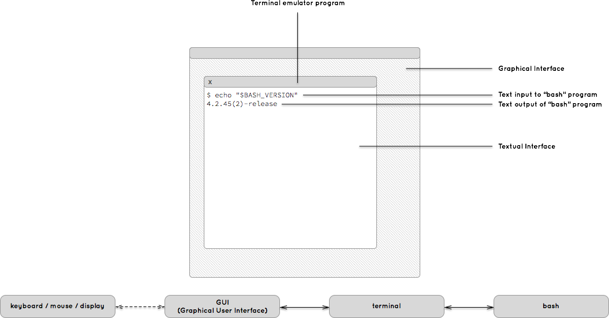

This guide is an introduction to basic and advanced concepts of the bash shell.
It teaches both newcomers and long-time users the best, safest and most robust ways of writing powerful bash scripts as well as making efficient and speedy interactive use of the shell.
This guide has gone through several iterations and is the result of a severe lack of consistent, clear and reliable language on the topic on the rest of the Internet as well as the public library or book stores.
Welcome to the bash guide. You're reading this guide, which means you probably have a vague idea about what bash is and what you might want to do with it.
If you've already got a fair notion of what bash is, I'd like to advise you to try and forget everything you think you know before you continue. There is a dreadful amount of misinformation floating around with regards to bash, its syntax and its place in your computer system. This guide will be maximally effective if you reset that prior knowledge and begin a clean slate.
So what is bash?
Short answer: Bash is a program on your computer like any other, but designed to be easy for you to talk to.
Every program on your computer has the ability to do a vast amount of different things. Read files, start other programs, do math, control devices. The main difference between bash and most other programs is that unlike them, bash was not programmed to perform a certain task. Bash was programmed to take commands from you, the user. To do so efficiently, a "language" was created which allows users to "speak" to the bash program and tell it what to do. This language is
the bash shell language and you are about to become intimately familiar with it.
What do I do with it?
Most of you will have quite a bit of experience already using computers. You probably use your keyboard and your mouse to interact with various programs on your computer. Most likely, you do this in a visual interface composed of buttons and widgets, text fields and images. This is the graphical user interface that has become the centerpiece to most users' computer interaction.
There are other ways of interacting with your computer, though. Bash uses a method directly counter to the ideas of graphical user interfaces: it runs in a text-only "console" where interaction is mainly limited to displaying characters on your screen and reading them from your keyboard. If you're not yet familiar in this kind of environment, it will feel exceptionally alien, primitive and limiting to you.
The truth is in fact quite the opposite. While a text-only interface is certainly less potent in what it can display (it's certainly not well suited for displaying images), its simplicity makes it very easy for us as humans to find consistent structure in how we can interprete the text that appears in it and how we can issue our commands. You'll find that the most skilled computer users are wildly more efficient in performing tasks through a text-based interface than
performing the same tasks using programs with a graphical interface. You will soon learn that the simplicity of bash's shell language is a key element to this.
So, what do you do with bash? You will use it to find out what files are on your computer, and what is in them. You will use it to run programs that can make all sorts of changes to your computer, from editing files and images to converting them. From moving and copying files around to creating automatic back-ups. From downloading code of new programs to compiling and running them. But before you get too excited: it is key that you remember, bash is a
tool, a single tool in a huge toolbox of programs. Bash alone will only let you do basic things with files and other programs. You will need to understand all the other tools in the toolbox of your system. This knowledge is vast and will come slowly, it is important that you take the time to learn them well rather than try to get the basic idea of most and break a leg tomorrow (or more likely, your music archive or collection of family
pictures).
Where do I find bash and how is it used?
We learned that bash is little more than a program on your computer waiting for you to start it and give it commands to perform. We learned that interacting with bash generally happens through a text-based interface where you "speak" by writing commands using the bash shell language and receive feedback in the form of textual output or the results of running other programs.
Before we dive right into the thick of it, let's first get our bearings. It's important that you understand where the bash program lives, how it's invoked, and what its environment is. How far does its reach extend and whom are its friends upon which it can call for help in performing the tasks you will instruct it to do.
Where do I find bash? How do I start using it?
Assuming that your operating system came with bash installed, you'll find bash as a simple binary program located in one of your system's standard binary directories. If you're running a system that does not ship with bash pre-installed, such as FreeBSD or Windows, you'll need to either use a distribution platform to download and install it, or obtain bash's source code and build the binary yourself. FreeBSD users can use ports, Windows users can use
cygwin, but there are alternative distributions. The source code is available from GNU.org. If all else fails, employ the powers of the Internet to find a means of installing bash before you continue.
With bash installed, we can run the binary to start the program. Before we do so, it's important to take note of the two distinct modes of operation that the bash shell supports:
interactive mode
In interactive mode, the bash shell waits for your commands before performing them. Each command you pass it is executed. While a command is being executed, you cannot interact with the bash shell. As soon as the command is finished, you can interact with bash again while bash awaits your next command.
non-interactive mode
The bash shell can also execute scripts. A script is a pre-written series of commands which bash can execute without needing to ask you what to do next. Scripts are generally saved in files and subsequently used to automate a wide range of tasks.
Apart from the source of the commands bash executes, these two modes of operation are very similar. For now, suffice it to say that if bash is asking you for a command to run, you're in interactive mode. If it's running commands stored in a file, it's running a script in non-interactive mode.
Also recal that the bash program generally runs in a text-based interface. It has no graphical interface for you to interact with, which means that if you're currently in a graphical interface, you'll first need to open a text-based interface before you can perform any meaningful interaction with the bash program. The standard way of opening a text-based interface involves opening a terminal. In the old days, terminals were the hardware devices we used to
connect to a computer and interact with it. Nowadays, most terminals are "emulated". That is to say, they are programs on your computer, either graphical or textual, that "emulate" a real terminal in software and create a textual interface for you to use. There is a wide variety of terminal emulators, and the ones available to you vary depending on what system you're on. Linux and *BSD users might use rxvt, xterm, gnome-terminal or konsole. OS X users might use Terminal or iTerm 2. Windows users can use programs such as cmd.exe, Console 2 and mintty. There are many alternatives for each operating system. Find one you like and read on as soon as it's installed and you're ready to start it.
Let's start bash!
First, make sure you're in a text-based interface by opening your terminal or terminal emulator program. Once you're in a text-based interface, you'll need to find a way to run programs. Just like graphical interfaces can vary greatly in how you start programs with them, as can text-based interfaces. Luckily, however, most terminals are configured to start a shell program as soon as it's ready. Remember how bash is a shell program? Chances are, your terminal will start with
bash already running in it. Some terminals, however, won't: some systems may default to shells such as cmd.exe, sh, dash, csh or zsh. Neither of these shells are bash, and their usage is not covered by this guide (if you need help, I again recommend you turn to the powers of the Internet). To find out whether or not your terminal is currently running a bash shell, let's try running our first bash
command!
$ echo "$BASH_VERSION"
4.2.45(2)-release
Since this is our first block of shell code, let's take a moment to point out the syntax we'll be using in this guide. All code is formatted like this. When there's a block of code, like above, we'll include both the output that appears on your terminal as well as the text you have typed into the terminal. We'll make a distinction between the text you type and the other text that appears in the terminal by formatting the text you type
like this. Text you should type can be easily selected by clicking it. Looking up at the code block above, you should now understand that the $-sign is not something you should type: it represents the prompt that will appear in your terminal when its shell is ready to receive a command. The actual prompt in your terminal may look different. At the prompt, you will enter the following text: echo "$BASH_VERSION", followed by hitting the ⏎ (enter/return) key to confirm the command. As
soon as you confirm the command, the bash shell will execute it and produce the output on the line below (or a similar version number).
If the above command yields no output or results in an error message (assuming you didn't mis-type anything), it means your terminal probably isn't running the bash shell. You'll need to manually start the bash shell before you can try the command again. In most shells, starting bash is as simple as executing the bash command. If not, you'll need to turn to the documentation of your system, terminal or shell, or activate the power of the Internet to find out
how to run the bash shell from your terminal.
If you're worried that you don't fully understand how this command works, don't. We'll go in-depth on bash's commands in a later chapter. Until then, you will see simple code every now and then: it'll be mostly obvious and not critical to understand what the code does. For now, take it matter-of-factly. Conveniently, one of the advantages of the bash shell language is that it is fairly easy to understand the simple statements.
What's going on here? text, terminals, bash, programs, input, output!
Near the end of the last section, you might have noticed we accelerated a bit.
If you're still a bit dizzy from the speed (and otherwise!), let's take a step back and get a clear picture of what's going on. Depending on your level of familiarity with the matter, there may be a lot of new concepts here. Even if these concepts are not new to you, there is a good chance you don't know exactly how to frame them. If you're going to understand what exactly is going on when you run
code on your computer, it's vital that you have a good understanding of how the different concepts interact.

When you start a terminal emulator program from your graphical user interface, you'll see a window open up with text in it. The text that displays in this window is both the output of programs running in the terminal as well as the characters you've sent to those programs using, for instance, your keyboard. The bash program is only one of many programs that can run in a terminal, so it is important to note that bash is not what's making text appear on your screen. The
terminal program takes care of that, taking text from bash and placing it in its window for you to see. The terminal may do the same for other terminal programs, completely unrelated to bash, such as a mail program or an IRC client.
It is sometimes difficult to tell just what programs are currently running in a terminal. In the example above, text from your keyboard goes through a long chain of programs, passed from one to the other, until it reaches its final destination (the mail program running on another computer at IP address 192.168.1.1).
I won't describe these programs in depth, the point here is that terminal programs all inter-connect and work together under the hood. Since there isn't much of a visual reminder about what's happening, it's important that you develop a good understanding of when programs start, communicate and end, so that you can properly understand the effects and side-effects of sending input to or receiving output from various programs in your text based user interface.
Briefly, the above example uses the bash program to run the ssh program, which sets up a connection with another computer. On the other computer, a new bash shell is started, whose input and output are sent back and forth over the connection. We then run the screen program with the remote bash, which is a terminal multiplexer. Such a program is a text-based terminal emulator, which can emulate multiple terminals
using only one terminal display (by using hotkeys to switch between active emulated terminals or displaying multiple of them using split screens). The screen program starts a bash shell to run in one of its own emulated terminals. In this third bash shell, we then run the mail program, which allows us to type in the mail message that we'd like to send.
So what exactly is a program and how does it connect to other programs?
It may seem obvious at first, but upon second thought it's not immediately clear to most what a program really is. Additionally, we're going to try and avoid making claims in this guide that aren't explained, at least within our subject scope, such as the fact that programs "connect" with one another.
In short, a program is a set of pre-written instructions that can be executed by your system's kernel. A program gives instructions to the kernel directly. The kernel is technically also a program, but one that runs constantly and communicates with your hardware instead.
A program generally lives on your disk, waiting to be started. When you "run" or "execute" a program, your kernel loads its pre-written instructions (its code) by creating a process for your program to work in. As we briefly saw in the previous section, your program can run many times simultaneously, each of those instances are running processes of your program. A process relays the instructions in your program to the kernel. A process also
has a few hooks to the outside world via something called file descriptors. These are essentially plugs we use to connect processes to files, devices or other processes. File descriptors are described by numbers, though the first three also have standard names:
standard input
File descriptor 0 is also called standard input. This is where most processes receive their input from. By default, processes in your terminal will have their standard input "connected" to your keyboard. More specifically, to the input your terminal program receives.
standard output
File descriptor 1 is also called standard output. This is where most processes send their output to. By default, processes in your terminal will have their standard output "connected" to your display. More specifically, your terminal program will display this output in its window.
standard error
File descriptor 2 is also called standard error. This is where most processes send their error and informational messages to. By default, processes in your terminal will have their standard error "connected" to your display, just like standard output. It's important to understand that standard error is just another plug, just like standard output, which leads to your terminal's display. It isn't dedicated to errors, in fact
bash uses it for most of its informational messages as well as your prompt!
A process isn't limited to just these three file descriptors, it can create new ones with their own number and connect them to other files, devices or processes as it sees fit.
If a program needs its output to go to another program's input, as opposed to your display, it will instruct the kernel to connect its standard output to the other program's standard input. Now all the information it sends to its standard output file descriptor will flow into the other program's standard input file descriptor. These flows of information between files, devices and processes are called streams.
A stream is information (specifically, bytes) flowing through the links between files, devices and processes in a running system. They can transport any kind of bytes, and the receiving end can only consume their bytes one-by-one. If I have a program that outputs names connected to another program, the second program can only see the second name after first reading the first name from the stream. When it's done reading the second name, the next thing in the
stream is the third name. Once it reads a name from the stream it would do well to save that name somewhere, because it cannot read it from the stream again: reading from a stream consumes those bytes and the stream advances to the next few bytes that haven't been read yet.
In the above example, two bash processes are linked via a stream. The first bash process reads its input from the keyboard. It sends output on both standard output and standard error. Output on standard error is connected to the terminal display, while output on standard output is connected to the second process. Notice how the first process' FD 1 connects to the second process' FD 0. The second process therefore consumes the first process'
standard output when it reads from its standard input. The second process' standard output in turn is connected to the terminal's display. Running this code in a terminal would show us something like this:
Your name?
Maarten Billemont
Hello, Maarten Billemont
Notice how the only text that appears in the terminal is the output of the commands that are connected to the terminal's display, as well as the input the terminal has sent to the programs.
It is important to understand that file descriptors are process specific: to speak of "standard output" only makes sense when referring to a specific process. In the example above, you'll notice that the first process' standard input is not the same as the second process' standard input. You'll also notice that the first process' FD 1 (standard output) is connected to the second process' FD 0 (standard input). File descriptors do not describe the streams
that connect processes, they only describe the process' plugs where these streams can be connected to.
Commands And Arguments
How do I give bash instructions?
What are bash commands and how do I write and issue them?
We learned a great deal about how bash and other processes work together in the terminal. Let's refocus on bash and start figuring out how exactly we get stuff done with it.
As mentioned earlier, bash waits for instructions from you and then executes them to the best of its abilities. To get the most out of bash, and especially to avoid damage due to bash misunderstanding your intentions, it's important that you pay close attention to these basics of the bash shell language. There are many people that consider themselves fluent in bash but fail to understand even these most basic concepts. As a result, they create programs that can inflict
extensive damage to unsuspecting users and systems. Don't be that guy.
So what are bash commands?
The core of the bash shell language are its commands. Your commands tell bash what you need it to do, step-by-step, command-by-command.
Bash generally takes one command from you at a time, executes the command, and when completed returns to you for the next command. We call this synchronous command execution. It is important to understand that while bash is busy with a command that you give it, there is no way for you to interact with bash: you'll have to wait for bash to get back to you after its job is done. For most commands, you'll barely notice this: they get executed so fast bash
will be back for the next command before you realize. Some commands can take a long time to complete, though. In particular, commands that start other programs with which you can interact. For instance, a command might start a file editor. While you're interacting with the file editor, bash takes a back-seat and waits for the file editor to end (which generally means you quit it). When the file editor program stops running, the command ends and bash resumes operation by
asking you for the next thing to do. You'll notice that while your editor is running, you are no longer at the bash prompt. As soon as your editor exits, your bash prompt re-appears:
$ exbash command to run the "ex" program.
: iex command to "insert" some text.Hello!
.A line with just a dot tells ex to stop inserting text.
: w greeting.txtex command to "write" the text to a file.
"greeting.txt" [New] 1L, 7C written
: qex command to "quit" the program.
$ cat greeting.txtAnd now we're back in bash!
Hello!The "cat" program shows the contents of the file.
$
Notice how in this session, we started out by giving bash the command to start the ex file editor. After issuing this command, our prompt changed: any text we enter now is sent to ex, not to bash. While ex is running, bash is aslumber waiting for your ex session to end. When you quit ex using the q command, the ex bash command ends and bash is ready to receive a new command. To tell you this, it shows you its prompt again, allowing
you to enter the next bash command. We finish the example with a cat greetings.txt bash command which tells bash to run the cat program. The cat program is great for outputting file contents (its name is short for concatenate, because its purpose is to output the contents of all the files you give it, one after the other, effectively concatenating the contents in its output). The cat command in the example is used to find out what is in our
greetings.txt file after we're done editing it with the ex program.
How do I give bash a command?
We've been showing quite a few examples now of running commands in bash, so you probably already have a good idea about how one issues basic commands in bash at the prompt.
Bash is mostly a line-based language. Accordingly, when bash reads your commands, it does so line-by-line. Most commands will only constitute one line and, unless the syntax of your bash command explicitly indicates that your command is not yet complete, as soon as you end that line, bash will immediately consider that to be the end of the command. As a result, typing a line of text and hitting the ⏎ key will generally cause bash to start
performing the command described by your line of text.
Some commands however, span multiple lines. These are usually block commands or commands with quotes in them:
$ read -p "Your name? " nameThis command is complete and can be started immediately.
Your name? Maarten Billemont
$ if [[ $name = $USER ]]; thenThe "if" block started but wasn't finished.
> echo "Hello, me."
> else
> echo "Hello, $name."
> fiNow the "if" block ends and bash knows enough to start the command.
Hello, Maarten Billemont.
Logically, bash cannot execute a command until it has enough information to do its job. The first line of the if command in the example above (we'll cover what these commands do in more detail later on) doesn't contain enough information for bash to know what to do if the test succeeds or if it fails. As a result, bash shows a special prompt: >. This prompt essentially means: the command you gave me is not yet at an end. We keep on
providing extra lines for the command, until we reach the fi construct. When we end that line, bash knows that you're done providing conditional result cases. It immediately begins running all the code in the entire block, from if to fi.
In each of these cases, we're passing our commands to an interactive bash session. As we explained before, bash can also run in non-interactive mode where it reads commands from a file or stream rather than asking you for them. In non-interactive mode, bash doesn't have a prompt. Aside from that, it operates pretty much the same. We could copy the bash code from the example above and put it in a text file instead:
read -p "Your name? " name
if [[ $name = $USER ]]; then
echo "Hello, me."
else
echo "Hello, $name."
fi
It doesn't matter much what you name the file in which you save the code. Let's say you saved it in a file called hello.txt, we can now run the commands from that file using bash without it having to ask us for instructions:
$ bash hello.txtThis starts a new "bash" process.
Your name? Maarten Billemont
Hello, Maarten Billemont.Our new "bash" process ends when there is no code left in the file.
$ Now that the "bash" command is done, our interactive bash comes back.
Notice that two bash processes are involved in this example. The bash process we start off from is our regular interactive shell. We tell that bash process to run a command which will cause it to start a new bash process. This second bash process will execute all the commands it finds in the file hello.txt, non-interactively. When it's done (there are no commands left in the file), the non-interactive bash process ends and the interactive bash process is
ready with your bash hello.txt command; it shows a new prompt asking you for the next command to run.
It's only a small step from a file with a list of commands in it to a veritable bash script. Open your hello.txt file again and add a hashbang to the top of it, as the first line of the script: #!/usr/bin/env bash
#!/usr/bin/env bash
read -p "Your name? " name
if [[ $name = $USER ]]; then
echo "Hello, me."
else
echo "Hello, $name."
fi
Congratulations! You've created your first bash script. What's a bash script? It's a file with bash code in it that can be executed by the kernel just like any other program on your computer. In essence, it is a program in itself, although it does need the bash interpreter to do the work of translating the bash language into instructions the kernel understands. That's where this "hashbang" line we've just added to the file comes in: It tells the kernel what interpreter
it needs to use to understand the language in this file, and where to find it. Your hashbang must be an absolute pathname to any program that understands the language in your file. Our hashbang is a little special, though: We reference the program /usr/bin/env, which isn't really a program that understands the bash language. It's a program that can find and start other programs. In our case, we tell it to find the bash program and use that for
interpreting the language in our script. Why do we use this "inbetween" program called env? It has everything to do with what comes before the name: the path. We know with relative certainty that the env program lives in the /usr/bin path. Given the large variety of operating systems and configurations, however, we don't have any good certainty about where the bash program is installed. Which is why we use the
env program to find it for us. That was a little complicated! But now, what's the difference between our file before and after adding the hashbang?
$ chmod +x hello.txtMark hello.txt as an executable program.
$ ./hello.txtTell bash to start the hello.txt program.
Most systems require you to mark a file as executable before the kernel is willing to give you permission to run it as a program, but once we do that, we can start the hello.txt program like we would any other program. The kernel will look inside the file, find the hashbang, use that to track down the bash interpreter, and use that to start running the instructions in the file. You have your first real bash program!
Learning to speak "bash"
If you've been paying close attention to the previous sections, you've got a pretty good introduction to what bash is, where and how it operates within the system and how you use it.
Time to start talking "bash". We're going to get introduced to the bash shell language's grammar, and with that, this guide is going to start getting a bit more technical. Don't worry, focus and you won't get left behind. If you get a feeling of unease and uncertainty, re-read the section before moving on. We'll try and cover all the how's and why's of new concepts. If anything remains unclear, we encourage you to get in touch so that we can improve this guide for you and your
fellow students. Our contact information is at the beginning of the guide.
About intentions and ambiguity
The biggest difference with speaking to a computer as opposed to speaking to a human is that computer programs are generally terrible at placing your requests in context and figuring out what your intention is. Those that try are usually called "smart" for being able to take ambiguous input and going to lengths to figure out what the intended result was. In this context, "smart" is unfortunately not quite in line with what we'd expect from smart humans: the kinds of
assumptions computer programs make based on our ambiguous input tend to be miles off and often lead to terrible or even disastrous results.
Sadly, we, as humans, are used to speaking in ambiguity: we rely on the receiver to understand the context of our requests and figure out what the most likely desirable action is. When we ask our partner to get the salt, we don't expect her to return with a handful of salt: we expect her to understand that our intention is to use the salt container to sprinkle some salt on our dish and we need her to bring the container to us, filled with at least a minimum amount of
salt.
It is important to recognize the ambiguity in our language and requests before we start talking to computer programs, because we need to learn to get rid of that ambiguity in our language. If you have little experience with doing this, it will likely be your biggest challenge going forward. It takes practice to think in such literal terms. It helps to imagine we're talking to a three-year old and showing them for the first time, each time, how to do the thing you need them to
do. When Bring the animals book doesn't yet cut it, we need to teach them the steps: Look around, do you see the books behind you?, Great! Can you find the book with the lion and the cow on it?, That's the one, grab it for me!, Good boy, now bring it to daddy! Come here, you., Hi! Look at you. Give me the book and sit down, let's read it together.; in a way, writing a bash script is similar to teaching your system how to do a task.
The difference is your three year old will recognize previous experiences in new requests by himself, your system won't: you'll need to explicitly specify and run previously written job descriptions.
Some language interpretors (programs, like bash, that understand a certain computer language) try to compensate for this problem by being extremely strict with their grammar and syntax. The idea is to weed out the ambiguity in your language so as to avoid accidentally doing the wrong thing. The interpretor enforces correctness to a certain degree: this tends to be a relatively successful strategy and generally results in the least buggy programs.
Sadly, bash is not a strict interpretor.
In fact, bash's latitude is largely at fault for the general ineptitude toward bash scripting with most anyone introduced to the language, novice and professional alike. The result is not dissimilar to the state of the web around the turn of the century: Many pages were written so badly that their ability to render properly on any kind of standards-based browser was sufficiently compromised to force these browsers to implement all sorts of "smart" hacks in an attempt
to render the pages as they might have been intended to render, rather than what they were written to render. Similarly, the gross part of the scripts you are going to run into will be buggy. Sometimes subtly so, often to the point where simply using it with a file whose name is somewhat unexpected may cause irreversible damage to your system.
Don't be that person.
This guide exists to teach you to write good bash code. It will empower you to convey your true intentions and have a computer solve your problems. Since bash is a lax interpreter, the responsibility of discipline lays with you. If you're not up to honoring this prerequisite, I recommend you stop reading now and find a strict interpreter instead. There is too much bad bash code in the world, and this guide will not be responsible for empowering people to write
more.
The basic grammar of a bash command
At the highest level, there are a few different kinds of commands. We'll explain each type, give a brief example and go more in depth on each command type in a later section. Don't worry too much about the syntax of these commands yet: that'll become clear when we focus on the different command types later on. What you should take away from this is a high-level understanding that bash commands come in different shapes and sizes, and a rough understanding of different
syntaxes.
Simple Commands
This is the most common kind of command. It specifies the name of a command to execute, along with an optional set of arguments, environment variables and file descriptor redirections.
Before we command's name you can optionally put a few variable assignments. These assignments apply only to the command's environment. We'll go more in depth on variables and environment later on.
The command's name is the first word (after the optional assignments). Bash finds the command with that name and starts it. We'll learn more about what kind of named commands there are and how bash finds them later on.
A command's name is optionally followed by a list of arg words, the command arguments. We'll soon learn what arguments and their syntax are.
Finally, a command can also have a set of redirection operations applied to it. If you recall our explanation of file descriptors in an earlier section, redirections are the operations that change what the file descriptor plugs point to. They change the streams that connect to our command processes. We'll learn about the power of redirections in a future section.
Pipelines
Bash comes with a lot of "syntax sugar" to make common tasks easier to perform than by using just the basic syntax. Pipelines are an example of sugar that you'll be using a lot. They are a convenient way of "connecting" two commands by way of linking the first process' standard output to the second process' standard input. This is the most common way for terminal commands to talk to one another and convey information.
We rarely use the time keyword, but it is convenient for finding out how long it takes to run our commands.
The ! keyword is a little odd at first, and just like the time keyword it doesn't have much to do with connecting commands. We'll learn about what it does when we discuss conditionals and testing the success of commands.
The first command and the second command2 can be any type of command from this section. Bash will create a subshell for each command and set up the first command's standard output file descriptor such that it points to the second command's standard input file descriptor. The two commands will run simultaneously and bash will wait for both of them to end. We'll explain what exactly these "subshells" are in a later chapter.
Inbetween the two commands goes the | symbol. This is also called the "pipe" symbol, and it tells bash to connect the output of the first to the input of the second command. Alternatively, we can use the |& symbol inbetween the commands to indicate that we want not only the standard output of the first command, but also its standard error to be connected to the second command's input. This is usually undesirable since the standard
error file descriptor is normally used to convey messages to the user. If we send those messages to the second command rather than the terminal display, we need to make sure the second command can handle these messages.
Lists
A list is a sequence of other commands. In essence, a script is a command list: one command after another. Commands in lists are separated by a control operator which indicates to bash what to do when executing the command before it.
The command can be any of the other types of commands from this section.
After the command comes the control operator which tells bash how the command should be executed. The simplest control operator is just starting a new line, which is equivalent to ; and tells bash to just run the command and wait for it to end before advancing to the next command in the list. The second example uses the || control operator which tells bash to run the command before it as it normally would, but after finishing
that command move to the next command only if the command before it failed. If the command before it didn't fail, the || operator will make bash skip the command after it. This is useful for showing error messages when a command fails. We'll go more in depth on all the control operators in later sections.
Compound Commands
Compound commands are commands with special syntax inside them. They can do a lot of different things but behave as a single command in a command list. The most obvious example is a block of commands: The block itself behaves as a single big command but inside it are a bunch of "sub" commands. There are a lot of different kinds of compound commands and we will cover them all in-depth later.
Both examples perform the same operation. The first example is a compound command, the second is a compound command in a command list. We discussed the || operator briefly before: The command on the right side of it is skipped unless the command before it fails. This is a good example to illustrate an important property of compound commands: they behave as one command in a command list. The compound command in the second example begins at
{ and continues until the next }, as a result everything inside the braces is considered a single command, meaning we have a command list of two commands: the rm command followed by the { ... } compound. If we leave out the braces, we get a list of three commands: the rm command followed by the echo command, followed by the exit command. The difference is mainly important to
the || operator in deciding what to do when the rm command before it succeeds. If the rm succeeds, || will skip the command after it, which, if we leave out the braces, would be only the echo command. As a result, a successful rm will lead to an exit. If we leave in the braces, || will skip the entire compound on a successful rm, including both its
echo and exit, and move on with the rest of the script instead.
Coprocesses
A coprocess is some more bash syntax sugar: it allows you to easily run a command asynchronously (without making bash wait for it to end, also said to be "in the background") and also set up some new file descriptor plugs that connect directly to the new command's input and output. You won't be using coprocess too often, but they're a nice convenience for those times you're doing advanced things.
The example starts an asynchronous tail command. While it runs in the background, the rest of the script continues. First the script reads a line of output from the coprocess called auth (which is the first line the tail command output). Next, we write a message showing the latest authentication attempt we read from the coprocess. The script can continue and each time it reads from the coprocess pipe, it will get the next line from the
tail command.
Functions
When you declare a function in bash, you're essentially creating a temporary new command which you can invoke later in the script. Functions are a great way to group a list of commands under a custom name for convenience if you perform similar tasks regularly in your script.
You begin by specifying a name for your function. This is the name of your new command, you'll be able to run it later on by writing a simple command with that name.
After the command name go the () paranthesis. Some languages use these paranthesis to declare the arguments the function accepts: bash does not. The paranthesis should always be empty. They simply denote the fact that you're declaring a function.
Next comes the compound command that will be executed each time you run the function.
To change the file descriptors of the script for the duration of running the function, you can optionally specify the function's custom file redirections.
Simple commands: The foundation of every bash command
Phew! That was a lot all at once. Most of this might have gone over your head - that's fine. We'll get back to the simple stuff and let you build up your knowledge with a thorough understanding. But it's important to take away that bash has different kinds of commands, and most of the syntax is actually pretty similar: Most commands take redirections, control operators and accept "subcommands" somehow. We'll explain these concepts, but first
let's make sure we understand simple commands well.
It is vital that you understand simple commands well because they are the foundation of everything you will do in bash. You might have noticed in the previous section that all other bash commands are composed of at least one simple command: they merely take simple commands and perform special operations with them.
Let's have another look at the definition of a simple command. We're going to take it step by step, because although the definition seems short, there's a lot going on here.
We're first going to focus on the command's name. The name tells bash what the job is that you want this command to perform. To figure out what you want your command to do, bash performs a search to find out what to execute. In order, bash uses the name to try and find a:
function
Functions are previously declared blocks of commands that were given a name. You briefly saw how we declare a function in the previous section. All declared functions are put in a list and bash searches this list to see if any of them have the same name as the name of the command it's trying to execute.
builtin
Builtins are tiny procedures built into bash. They are small operations that were programmed into bash and bash doesn't need to run a special program to be able to perform them. We will look into what builtins bash provides, along with their names and what their effect is.
program, also called an external command
Your system has a great many programs installed, some of them do little tasks, some of them do big tasks. Some of them run in the terminal, some of them run invisibly, others run in your graphical interface. Bash finds programs by looking into your system's configured PATH (which we'll explain in a moment).
If bash finds no way to execute a command by the name you gave it, your command will result in an error and bash will show an error message:
$ buy beer
bash: buy: command not found
I'll make only brief mention of aliasses: before bash performs this search, it first checks if you've declared any aliasses by the name of the command. If you did, it will replace the name by the value of the alias before proceeding. Aliasses are only rarely useful, only work in interactive sessions and are almost completely superceded by functions. You should avoid using them in almost all cases.
The PATH to a program.
We have all sorts of programs installed on our computer. Different programs are installed in different places. Some programs shipped with our OS, others were added by our distribution and yet others were installed by us or our systems administrator. On a standard UNIX system, there are a few standardized locations for programs to go. Some programs will be installed in /bin, others in /usr/bin,
yet others in /sbin and so on. It would be a real bother if we had to remember the exact location of our programs, especially since they may vary between systems. To the rescue comes the PATH environment variable. Your PATH variable contains a set of directories that should be searched for programs.
Bash honors this variable by looking through its listed directories whenever you try to to start a program it doesn't yet know the location of. Say you're trying to start the ping program which is installed at /sbin/ping. If your PATH is set to /bin:/sbin:/usr/bin:/usr/sbin then bash will first try to start /bin/ping, which doesn't exist. Failing that, it will try /sbin/ping. It finds the
ping program, records its location in case you need ping again in the future and goes ahead and runs the program for you.
If you're ever curious about exactly where bash finds the program to run for a command name, you can use the type built-in to find out:
$ type ping
ping is /sbin/ping
$ type -a echoThe -a switch tells type to show us all the possibilities
echo is a shell builtinIf we just run 'echo', bash will use the first possibility
echo is /bin/echoWe have an echo built-in but also a program called echo!
Remember from the previous section how bash has some functionality built into it? One of those is the functionality of the echo program. If you run the echo command in bash, even before bash tries a PATH search, it will notice there's a built-in by that name and use it. type is a great way to visualize this lookup process. Note that it's much faster to execute a command that's built-in than it is to start an extra program. But if
you're ever in need of echo's functionality without being in bash, you'll be able to use the echo program instead.
Sometimes you'll need to run a program that isn't installed in any of the PATH directories. In that case, you'll have to manually specify the path to where bash can find the program, rather than just its name:
$ /sbin/ping -c 1 127.0.0.1
PING 127.0.0.1 (127.0.0.1): 56 data bytes
64 bytes from 127.0.0.1: icmp_seq=0 ttl=64 time=0.075 ms
--- 127.0.0.1 ping statistics ---
1 packets transmitted, 1 packets received, 0.0% packet loss
round-trip min/avg/max/stddev = 0.075/0.075/0.075/0.000 ms
$ ./hello.txtRemember our hello.txt script?
Your name? We use the path "." which means "our current directory"
You can add more directories to your PATH. A common practice is to have a /usr/local/bin and a ~/bin (where ~ represents your user's home directory). Remember that PATH is an environment variable: you can update it like this:
$ PATH=~/bin:/usr/local/bin:/bin:/usr/bin
$
This will change the variable in your current bash shell. As soon as you close the shell, the change will be lost, though. We'll go more in-depth on how environment variables work and how you should configure them in a later section.
Now that you understand how bash finds and runs your command, let's learn how to pass our instructions to those commands. These instructions tell our command what exactly it needs to do. We might run the rm command to delete a file, or the cp command to copy a file, we might run the echo command to output a string or the read command to read a line of text. But these commands generally can't do much without more
details, more context. We need to tell rm what file to delete, cp what file to copy and where to put the copy. echo wants to know what you want it to output and read can be told where to put the line of text it's read. We provide this kind of context using arguments.
As you can see from the command syntax, arguments come after the command's name. They are words separated by blank space. When we say words in the context of bash, we do NOT mean linguistic words. In bash, a word is defined as a sequence of characters considered as a single unit by the shell. A word is also known as a token. A bash word can contain many linguistic words, in
fact it could contain prose. For sake of clarity, the rest of this guide will use the term arguments wherever applicable to avoid the ambiguity of the term words. What's important is that the word or argument is a single unit to the shell: it could be a filename, a variable name, the name of a program or the name of a person:
$ rm hello.txt
$ mplayer "05 Between Angels and Insects.ogg" "07 Wake Up.ogg"
In the above examples, the words are highlighted. Notice how they aren't linguistic words, but meaningful units. In this case, they're all file names. To separate multiple arguments we use blank space. That can be both spaces and tabs. Usually you will use a single space between arguments.
A problem now arises: how should the shell know that you mean for your filename to be 05 Between Angels and Insects.ogg and not 05? We have a space after 05, separating it from Between with blank space. But our intention is for those two to remain "together". That is: the blank space between them should not split them into separate arguments. What we need is a way to tell the shell that it should treat something
literally: that means, use it as-is, taking away its syntactical meaning. If we can make the spaces literal, they will no longer tell bash to split the 05 from the Between, and bash will use it as a normal ordinary space character.
There are two ways in bash to make characters literal: quoting and escaping. Quoting is the practice of wrapping " or ' characters around the text that we want to make literal. Escaping is the practice of placing a single \ character in front of the character that we want to make literal. The example above uses quotes to make the entire filename
literal, but not the space inbetween the filenames. We strongly recommend you use quotes over escaping, since it results in much clearer and more readable code. More importantly: it makes it much more difficult to tell exactly which parts of your code are literal and which aren't. Using escaping rather than quoting, our example would look like this:
Quoting is one of the most important skills you will need to master as a bash user. Its importance cannot be understated. The nice thing about quotes is that while it is sometimes unnecessary, it is rarely ever wrong to quote your data. These are both perfectly valid:
$ ls -l hello.txt
-rw-r--r-- 1 lhunath staff 131 29 Apr 17:07 hello.txt
$ ls -l "hello.txt"
-rw-r--r-- 1 lhunath staff 131 29 Apr 17:07 hello.txt
$ ls -l "05 Between Angels and Insects.ogg" "07 Wake Up.ogg"
But don't be caught off-guard! This is definitely not correct:
$ ls -l 05 Between Angels and Insects.ogg
ls: 05: No such file or directory
ls: Angels: No such file or directory
ls: Between: No such file or directory
ls: Insects.ogg: No such file or directory
ls: and: No such file or directory
You will not have these handy yellow markers in your shell. Try to make a habit of mentally picturing them so that you keep yourself from making mistakes. You definitely won't be the first to have accidentally destroyed all the files in their home directory as a result of a stray or unquoted space character.